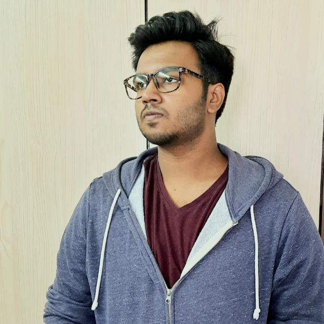

Vignesh welcomes you. Carpe Diem !!!

Introduction :-
Name :- S.Vignesh Nelakantan
Profession :- Student
Nationality :- Indian (Born in Coimbatore, Tamilnadu).
Known Languages :- English & Hindi (Spoken/Written), Tamil(Spoken).
Education :-
Pre-schooling :- Bangalore, India.
Primary schooling :- Bangalore, India .
Secondary and Senior Secondary schooling :- Pune, India.
Co-curricular activities and achievements:-
Yoga :- Represented my school at pune district level twice.
Science Competetion:- Represented my school in 44th Jawaharlal Nehru Science, Mathematics & Environment Exhibition at regional level(Proj on:- Transportation - Singnal free roads).
Basketball :- School level basketball player.
Karate:-
Practiced Shitō-ryū (糸東流) Karate for 4.5 years, completed my Karate course till black belt.
Won silver medal 3 times in District level karate championship.
Was selected for International Karate Championship twice and won 1 bronze and 1 silver medal every time.
Was a referee in the district level Karate level championship at PUne, Maharashtra, India.
Hobbies :-
Playing out door sports like football, cricket, basketball, badminton, etc.
Swimming.
Mobile phone photography.
Solving rubik's cube (2x2, 3x3, 4x4, 5x5, 3x3 mirror cube).
Going for a brisk walk in the outdoors.
Exercising.
Technical skills :-
Good knowledge in Python programming.
Good hold on MySQL basics.
Learning C .
Learning Web-programming (HTML, CSS, JAVASCRIPT).